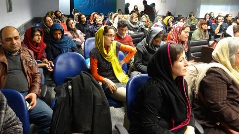
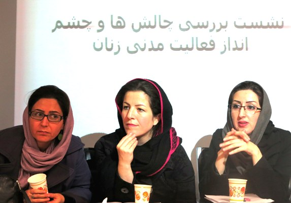
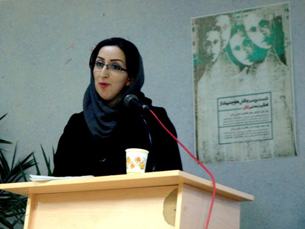
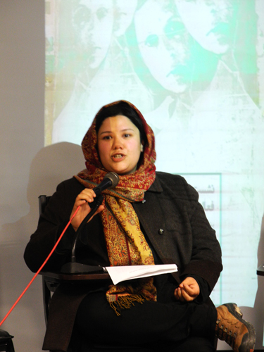
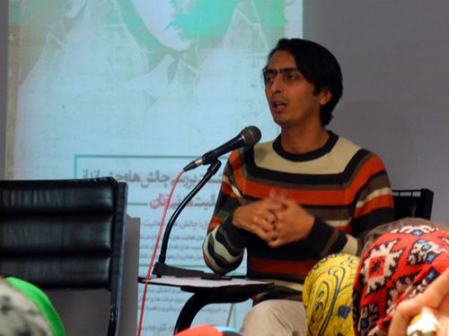

پذيرش > تریبون > مقالات > برگزاری نشست فعالان زن در تهران:«چالش ها و چشم اندازهای فعالیت های مدنی (...)


 برگزاری نشست فعالان زن در تهران:«چالش ها و چشم اندازهای فعالیت های مدنی زنان» برگزاری نشست فعالان زن در تهران:«چالش ها و چشم اندازهای فعالیت های مدنی زنان»
15 آذر 1392 - - نسخه قابل چاپ

تغییر برای برابری: روز پنجشنبه چهاردهم آذرماه نشستی با موضوع بررسی «چالش ها و چشم اندازهای فعالیت های مدنی زنان» با حضور جمعی از فعالان حقوق زنان برگزار گردید. برنامه از دو پنل تشکیل می شد که در پنل اول «چالش های فعالیت مدنی زنان» و در پنل دوم « چشم انداز فعالیت مدنی زنان» مورد بررسی قرار گرفت. در پنل اول سه موضوع«دستاوردهای فعالیت های مدنی زنان در دهه گذشته» با سخنرانی ناهید کشاورز، «بررسی آسیب های فعالیت های مدنی زنان» با سخنرانی زهره اسدپور و «نحوه تعامل میان فعالان و گروه ها از شهرها، اقشار و قومیت ها» با سخنرانی نفیسه محمدپور ارائه شد و در پنل دوم «حق فعالیت مدنی و تشکل یابی زنان» با سخنرانی نیکزاد زنگنه، «چالش های پیش روی حرکت ها و تشکل های زنان» با سخنرانی دلارام علی و «شرایط جدید و امکان پیگیری راهبرد مطالبه محوری» با سخنرانی کاوه مظفری مورد طرح و بررسی قرار گرفت.

در بخش اول ناهید کشاورز به بیان تاریخچه ای از جنبش زنان ایران و دستاوردهای آن پرداخت. کشاورز جنبش زنان را به عنوان جنبشی که سر از درون تعارض میان شرایط پیش رونده و مناسبات عقب مانده حاکم در آورده و رشد کرده است، معرفی کرد. این فعال حقوق زنان در ارتباط با چگونگی سازماندهی کنشگران جنبش زنان با توجه به شرایط اجتماعی و سیاسی سال های اخیر، اظهار داشت: «در حوزه سازماندهی کنشگران زنان از محافل با ساختار بسته و درون گرا به ایجاد سازمان ها و گروه های علنی تر و بارزتر گرایش پیدا کردند، در دوره پسااصلاحات از یک طرف به دلیل فشارهای سیاسی و از طرف دیگر به دلیل ضرورت های علمی، کنشگران زن به سمت ایجاد ائتلاف هایی خواسته محور گرایش یافتند.» کشاورز در ارتباط با بحث سازماندهی جنبش زنان در دوره های مختلف به دموکراتیک بودن این سازماندهی که کنشگران جنبش زنان بر آن همواره تاکید داشته اند، اشاره کرد.
این فعال مدنی در ارتباط با چشم انداز و اهداف استراتژی جنبش زنان گفت: امروز شاهد روندی در جنبش زنان هستیم که از مطالبات پراکنده، کلان، مبهم و شعارگونه به سمت مطالبات خاص و مشخص حرکت می کند به طوری که مطالبه محوری به یکی از عناصر مهم گفتمانی به جنبش زنان تبدیل می شود.
در ادامه ناهید کشاورز به تاثیر جنبش زنان بر افکار عمومی، نهادهای جامعه مدنی و احزاب، مراجع و روحانیون و تاثیر بر حکومت نگاه گذرایی داشت.

سخنران دوم زهره اسدپور بود که به بررسی آسیب های فعالیت های مدنی زنان پرداخت. اسدپور در ابتدای سخنان خود با اشاره به کتاب «اورینتالیسم/شرق شناسی» ادوارد سعید گفت: ادوارد سعید در کتاب خود بر این که نمی توان تولید دانش را فارغ از سیاست و مناسبات سیاسی هر دوره بررسی کرد می کوشد تا با ارتباط دادن بستر و زمینه ای که در آن اورینتالیسم – شرق شناسی – شکل گرفته و نضج یافته است درک بهتری از شرق شناسی به دست آورد. او با بررسی چند قرن آثار مستشرقان غربی عیان می سازد که تصویری که غرب از شرق دارد تصویری است، متاثر از برتری و سلطه ی غرب، برتری و سلطه ای که به غرب، جایگاه شناسا می بخشد، شناسایی که در یک رابطه ی متقابل همچنان که تسلط اش به او امکان تولید دانش و گاه حتی انحصاری کردن تولید دانش را می دهد، از سویی دیگر این جایگاه مرکزیت در دانش آفرینی، به قدرت غرب می افزاید.
این فعال زنان در ادامه اظهار داشت: در این دانش، شرق مرموز، اسرارآمیز، غیر عقلانی و سلطه پذیر توصیف می شود. سعید به دو لایه ی پنهان و آشکار شرق شناسی می پردازد. به زعم او لایه ی پنهان شرق شناسی یا اورینتالیسم را می توان از توصیف ماهیت و میزان سکسوالیته ی شرقی دریافت.
اسدپور در ارتباط با تاثیر نظریات ادوارد سعید بر فمینیسم خاورمیانه گفت: گرچه سعید خود به تحلیل جنسیتی اورینتالیسم نپرداخته است، اما اثر عظیم او بر فمینیسم، به خصوص فمینیسم خاورمیانه تاثیر ماندگاری گذاشته است. خوانش فمینیستی از اورینتالیسم سعید، آن چه را که او لایه ی پنهان شرق شناسایی می خواند را به مرکز و جوهر شرق شناسی ارتقا می دهد. به این اعتبار، تصویر زن قربانی فاقد عاملیت و نیازمند نجات دهنده، که دانش اورینتالیستی به دست می دهد، به چالش گرفته می شود.
این فعال اجتماعی با اشاره بر تولید دانش غربی افزود: مسئله ی مهم فمینیسم در این خوانش از اورینتالیسم این است که اگر غرب به واسطه ی مناسبات قدرت و جایگاه برتری که در این مناسبات دارد، اصلی ترین تولید کننده ی دانش نیز هست، دانشی که بی تردید بی طرف نیست و در رابطه ی دو طرفه به تثبیت موقعیت غرب یاری می رساند؟ چگونه می توان این انحصار را از دست غرب خارج کرد؟ چگونه می توان دانشی که نه تنها ابژه که سوژه اش نیز فرودستان جهانی باشند، دانشی از شرق کسب کرد که با نگاه شرقی بنا شده باشد که دیگر شرق در آن «دیگری ای اسرار آمیز و واپس گرا و غیر عقلانی» نباشد؟
در انتها زهره اسدپور با اشاره به در هم تنیدگی قدرت و دانش گفت: اما این آگاهی به در هم تنیدگی تولید دانش و قدرت، می تواند منجر به تقابلی کور شود. تقابلی که مقاومت را در تایید و توجیه هر آن چه که در شرق است می بیند. سعید خود به خوبی به این بزنگاه آشنا بود و می دانست هم چنان که باید به رابطه ی متقابل تولید دانش و قدرت توجه دهد، نباید از جهان شمولی اصول انسانی نیز غافل شد. به این اعتبار و در خوانشی فمینیستی، گرچه باید به دانشی که غرب از زن شرقی و جایگاه او، نیازها و نقش او، ارائه می دهد مشکوک شد و در هم تنیدگی آن را با جوهر قدرت که در پی حفظ نقش مسلط غرب است در نظر داشت. جوهر قدرتی که در بسیاری از موارد برای توجیه سلطه طلبی و مداخله در شرق از تصویر «زن قربانی شرقی»" بهره می برد، اما نباید از آن سوی بام افتاد و در قامت توجیه کننده وضع غیر قابل توجیه زن در جامعه ی شرقی- اینجا ایران – برآمد و یا با منتسب کردن معنایی برابری خواهانه به متون مقدس که اساسا ظرفیت قرائتی برابری خواهانه را ندارند، با بهانه ی مقاومت در برابر سلطه، یا ارائه ی خوانشی خودی از فمینیسم و برابری زن، بی راهه ای دیگر را در برابر راه برابری برگشود. حرکت در این خط میانی بی انحراف به هر دو سوی، می تواند افق رهایی زن را بیش از همیشه دست یافتنی سازد.
وی همچنین تاکید کرد: موضوع دیگری که باید به آن توجه داد یادآوری این است که وقتی از زنان حرف می زنیم باید مشخص کنیم که منظورمان زنان از کدام طبقه هستند و به یاد داشته باشیم زنان از طبقات مختلف نیازها و خواسته های متفاوتی دارند که نمی توان از این تفاوت چشم پوشی کرد.

سخنران آخر پنل اول نفیسه محمد پور بود که به نحوه تعامل میان فعالان و گروه ها از شهرها، اقشار و قومیت ها در سخنان خود پرداخت. محمد پور در ابتدای سخنان خود با اشاره به ایزوله نبودن جنبش زنان گفت: جنبش زنان مانند هر جنبش اجتماعی دیگری ایزوله نیست که به ابعاد مختلف زندگی بشر از جمله ملیت، قومیت، طبقه، نژاد، مذهب بی ارتباط باشد. تمام جنبش های اجتماعی نتیجه تبعیض و قبض و انباشت مطالباتی است که برای مدت های طولانی مورد بی توجهی قرار گرفته و حتی تعمدا سرکوب شده است. بنابراین می توان اشتراکات و شباهت هایی میان بسیاری از جنبش های اجتماعی در سراسر جهان یافت. اما این شباهت ها لزوما به معنای وجود حس همدردی بین آنها و ایجاد منافع مشترک نیست، چه بسا برخی جنبش ها با یکدیگر تضاد منافع داشته و یکدیگر را بی اثر نمایند.
این فعال حقوق زنان با اشاره به عدم ارزش گذاری حقوق بشر گفت: تحقق کامل دموکراسی بدون تحقق تمام این حقوق بشری امکان پذیر نیست. این حقوق با یکدیگر همسو باشند یا نباشند نمی توان یکی را بر دیگری برتری داد یا در اولویت قرار داد. در عین حال که اینها در طول یکدیگر نیستند، نمی توان آنها را در عرض هم تصور کرد. محرومیت از هر کدام از این حقوق به محرومیت دیگر دامن می زند.
محمد پور در ادامه با طرح این سوال که آیا جنبش زنان توانسته در میان اقشار جامعه، نژادها، قومیت ها و طبقات اجتماعی جایی برای خود باز کند؟ یا به عبارت دیگر چقدر توانسته خود را نماینده مطالبات قشرها و طبقات مختلف زنان معرفی نماید، گفت: مطالبات زنان در کشور ما یک طیف رنگارنگ و بسیار گسترده از اصلاح قوانین تبعیض آمیز گرفته و حق ورود به ورزشگاه ها تا یک زندگی عاری از خشونت را شامل می شود. چالش اصلی جنبش زنان در ایران ایجاد تعادل و تعامل بین اقشار و شهرها است و ایجاد ارتباط بین شهرها و اقشار و قومیت ها از طریق فعالان مدنی و حقوق زنان در آن مناطق امکان پذیر است. ناگفته پیداست که فعالان شهرستان ها با مسائل و دشواری هایی به مراتب پیچیده تر از مرکز رو به رو هستند. نقدی که در این زمینه بر جنبش زنان وارد است این است که چندان در برقراری ارتباط فعال و ایجاد تعامل شهرها با یکدیگر فعال عمل نکرده است.
نفیسه محمدپور در انتها با اشاره به خطر مرکز گرایی و نخبه گرایی جنبش زنان گفت: جنبش زنان در اکثر نقاط جهان جنبشی است که طبقه متوسط آن را آغاز می کند اما این مسئله با داشتن نگاه طبقاتی به طبقه متوسط تفاوت دارد. حتی نخبه گرا بودن صرف هم ایرادی بر جنبش زنان نیست زیرا حتی در شهرهای کوچک نیز حرکت ها از طبقه متوسط، افراد نخبه و روشنفکر آغاز می شود. مهم این است که ارتباط فعال بین نخبگان و فعالان شهرها برقرار شود. تا ضمن اطلاع رسانی دقیق تر از وضعیت شهرها و مسائلی که خاص شهرهای به خصوص است، این هم اندیشی و هم یاری به صورت یک روند همیشگی صورت گیرید.
پنل دوم نشست با سخنرانی نیکزاد زنگنه فعال حقوق زنان درباره موضوع «حق فعالیت مدنی و تشکل یابی زنان» آغاز شد .

وی سخنان خود را با ابراز خشنودی از این فرصت بدست آمده برای جنبش زنان آغاز کرد و ادامه داد: حق تشکل یابی زمانی به مسئله تبدیل می شود که نقض شود. ناقض این حق می تواند ساختار قدرت و یا جامعه مدنی باشد. سلب حق تشکل یابی در جامعه مدنی می تواند به شکل مستقیم یعنی توسط مناسبات مردسالارانه حاکم بر جامعه مدنی یا به شکل غیرمستقیم یعنی از طریق اولویت دادن به مسائل دیگر درون جامعه به جز تبعیض ها و مطالبات جنسیتی یا به تاخیر انداختن طرح این موارد اتفاق بیفتد. حق تشکل یابی در حوزه زنان اما در در یک کشور دارای فضای مردسالارانه و قوانین سرکوب آمیز برای زنان از اهمیت بیشتری برخوردار است. زیرا می تواند صدای زنان مختلف را رساتر کند.
او با اشاره به اینکه می خواهد مبحث حق فعالیت مدنی و تشکل یابی زنان را از سه منظر بررسی کند، درباره «رابطه تشکل ها و ساختار قدرت» گفت: دخالت حاکمیت در زمینه تشکل یابی به فراهم نکردن امکانات ختم نمی شود بلکه در مواردی حاکمیت با هدف نظارت وارد فرآیند تشکل یابی می شود اما این ورود به کنترل و اعمال محدودیت می انجامد. برای نمونه می توان به دخالت حاکمیت در شکل گیری ان جی او ها ازطریق دشوارسازی ثبت رسمی آنها اشاره کرد. از سوی دیگر در برخی موارد حاکمیت با ایجاد کنترل بر تشکل ها، آنها را به ابزاری برای انتشار ارزش های خود در جامعه تبدیل می کند و کارکرد اصلی آنها را از بین می برد.
زنگنه درباره «رابطه درونی تشکل ها» گفت: باید به انزواهای درونی تشکل های زنان نیز توجه کرد. وضع چارچوب های غیرمنعطف و بسته در زمینه مطالبات و راهبردها می تواند منجر به ضعیف شدن فرآیند تشکل یابی یا از هم پاشیدن تشکل ها شود. خطر بزرگی که در این فضا به وجود می آید، جذب کنشگران فعال زنان به عرصه های فعالیتی دیگری است که به نیازهای دیده نشده آنها در تشکل های زنان، پاسخ می دهد. او افزود: مثلا در بحث مرخصی زایمان، این زنان طبقه متوسط هستند که نقد دارند چون به فکر پیشرفت فردی و ارتقای شغلی هستند و نمی خواهند موقعیت کاری خود را از دست بدهند درحالیکه زنان طبقات دیگر در میان چرخ دنده شغل، کارخانگی و نگهداری فرزندان به طور همزمان، از بین می روند و چنین لایحه ای فرصتی مغتنم برای آنها محسوب می شود. در این میان برخی از قومیت ها یا طبقات کلا مد نظر قرار نمی گیرند.
او در رابطه با «تشکل ها با جامعه مدنی» به طرح 3 پرسش عمده بسنده کرد و حاضران را دعوت کرد تا به پاسخ این پرسش ها بی اندیشند:
 کدام یک از تشکل های زنان به بطن جامعه رفته اند و با بهره جستن از روش های جلب مشارکت محلی، مطالبات و اولویت های زنان را در این سطح واکاوی کرده اند؟ کدام یک از تشکل های زنان به بطن جامعه رفته اند و با بهره جستن از روش های جلب مشارکت محلی، مطالبات و اولویت های زنان را در این سطح واکاوی کرده اند؟
آیا فعالان زنان باید اولویت های جنبشی خود را درون اجتماعات محلی ببرند یا بهتر است با استفاده از روش های مشارکتی اقدام به استخراج اولویت های محلی کنند و سپس این اولویت ها را با خود همسو کنند؟
در صورت باز شدن فضا از سمت حاکمیت، فعالان زنان تا چه اندازه برای تشکل سازی در سطح محلی دانش، توانایی و تجربه دارند؟
زنگنه در پایان اشاره کرد: ما برای رسیدن به مطالبات خود نیازمند داشتن تشکل های قدرتمند و منسجمی از فعالان زنان در جامعه مدنی و در میان زنان جامعه هستیم تا بتوانیم از طریق این تشکل ها توان ارائه و دیکته کردن مطالبات خود را داشته باشیم. نه اینکه بخواهیم با اتکا به حاکمیت یا با تلاش برای سهیم شدن تشکل ها در قدرت سیاسی به طور مستقیم، به خواسته هایمان برسیم. ما نباید زمین بازی را گم کنیم بلکه باید همواره تلاش کنیم تا در برنامه عمل خود، در کنار جامعه مدنی، فعالان زنان، حاکمیت، و بخش خصوصی، «مردم» به ویژه زنان جامعه را فراموش نکرده باشیم.
این پنل با موضوع چالش های پیش روی حرکت ها و تشکل های زنان با سخنرانی دلارام علی فعال حوزه زنان و کودکان ادامه یافت .

او در ابتدا توضیح داد که موضوع صحبتش در رابطه با چالش های پیش روی حرکت ها و تشکل های زنان است اما چون نمی توان بدون تکیه بر تجربیات گذشته اقدام به پیش گویی چالش های احتمالی آینده کرد، قصد دارد تا با طرح برخی چالش های پر تکرار گذشته، امکان دوبار تکرار شدن آنها را مورد بحث قرار دهد.
وی بدین منظور ابتدا چالش های عمده و پر تکرار در دو دهه ی گذشته را به دو دسته ی درونی و بیرونی تقسیم کرده و سپس در هر یک از دسته ها به بیان برخی چالش ها پرداخت. اولین چالش درونی که وی بدان اشاره کرد ، چالش شکل فعالیت های جمعی زنان در دو دهه ی گذشته بود. در این رابطه وی دو شکل از فعالیت جمعی یعنی فعالیت در گروه های کوچک همفکر و گروه های بزرگ با تفکرهای متنوع را مورد بحث قرار داد و به چالش های هر یک از این اشکال فعالیت اشاره نمود. در ادامه موضوع هدف گذاری واحد یا تنوع در اهداف، توسط وی مورد بررسی قرار گرفت و به مصادقی از دو شکل هدف گذاری اشاره شده و به چالش های پیرامون هر یک پرداخته شد.
در ادامه ی مبحث چالش های درونی موضوع نسبت عمل گرایی و آرمان گرایی در فعالیت های زنان مطرح شد و اینکه چه نسبتی از هر یک از آنها می تواند هم بستر سازی کنشگری در حوزه ی زنان باشد و هم فعالین زنان را از آرمان های فمینیستی شان دور نکند. علی در رابطه با این بحث اشاره کرد که موضوع فمینیسم عمل گرا و ارتباط آن با آرمان گرایی در سال های گذشته بارها مطرح شده و با انتقاد زیادی هم مواجه بوده است که گاه مانع فعالیت برخی گروه ها با یکدیگر نیز شده است.
در ادامه ی این بحث او به فعالیت های زنان در دو دهه اخیر اشاره کرد و گفت : گاهی انتخاب جمع های کوچ و همسو در حرکت های زنان انتخابی بوده است که به دلیل شرایط و فضای سیاسی – اجتماعی آن دوران پدید آمده مانند تجربه ی محافل زنان در دهه شصت اما از نیمه های هفتاد تا نیمه هشتاد سازمانها و تشکل های زنان شکل گرفت که از اوایل نیمه هشتاد تا کنون ما بسیاری از آنان را از دست دادیم و جمع های بزرگتری مانند کمپین ها شکل گرفتند . گروههای کوچک با یک رویکرد خاص مشکلات را بررسی و ترویج می کردند اما در جمع های بزرگ روی یک هدف توافق می کردند و حتی همسو با هم نیز عمل نمی کردند . مثلا بخشی از بدنه کمپین سراغ مردم و بخشی دیگر سراغ علمای دینی می رفتند که چالش هایی را ایجاد می کرد . در این کمپین ها به لحاظ تکثر آرایی که وجود داشت تصمیم گیری سخت بوده و تنش های داخلی ایجاد می کرد . جمع های کوچک تر بیشتر از بیرون تحت فشار بود و حرکت های بزرگتر صدای آنان را حذف می کرد .
موضوع دیگر صحبت این فعال حقوق زنان چالش های مربوط داخلی / خارجی بودن در حوزه ی فعالیت های زنان بود. او در این رابطه با اشاره ای گذرایی به تاریخچه ارتباط میان فعالین زن ایرانی در داخل و خارج از کشور به چالش هایی که همزمان با موج جدید مهاجرت گسترده ی فعالین زنان پس از وقایع انتخابات 88 اشاره کرد و افزود این مهاجرت گسترده و عدم پیدا کردن ساز و کارهایی برای برقراری ارتباط منسجم و تصمیم گیری های جمعی در حوزه ی زنان پرسش های بسیاری را در چند سال گذشته پیش روی فعالان زن قرار داده که همچنان نیز پاسخ روشنی نیافته است. مثلا اینکه چه تصمیم هایی باید به صورت جمعی گرفته شود؟ چه کسانی باید در تصمیم گیری ها مشارکت کنند؟ مکانیزم های گفتگو باید به چه شکل باشد ؟
دلارام علی در ادامه به 3 چالش بیرونی در حوزه زنان اشاره کرد، نسبت با حاکمیت، ملی/ منطقه ای یا جهانی و تعامل با سایر جنبش ها.
در بحث نسبت با حاکمیت وی به موضوع دیدگاه حاکمیت به فعالیت های زنان در دو دهه گذشته اشاره کرد که عمدتا همراه با تنش و بی اعتمادی بوده و فشار بر آنها را در پی داشته است اما گاهی نیز به صورت گزینشی ارتباطاطی میان برخی فعالین مستقل و بخشی از بدنه ی حاکمیت ایجاد شده که آن نیز بیم از دولتی شدن بدنه ی مستقل را تقویت کرده است. وی افزود به نظر می رسد این موضوع در حال حاضر نیز همچنان چالش برانگیز و محل بحث است.
این فعال زنان موضوعی را نیز در خصوص ملی / منطقه ای یا جهانی فعالیت کردن مطرح نمود و در این خصوص به بررسی فرصت ها و تهدیدهایی پرداخت که به واسطه ی برقراری ارتباطات برون مرزی میان فعالین زنان در همه ی کشورها روی داده است. وی یکی از فرصت های این امکان را انتقال دانش و تجربیات میان فعالان برشمرد و یکی از چالش های اساسی را نیز شخصی شدن برخی از این فرصت ها عنوان کرد. اینکه این ارتباطات گاه به صورت فردی مورد بهره برداری قرار گرفته و عملا ارزش افزوده ی آن به جمع های فعال زنان در داخل برنگسته است.
وی در پایان صحبت های خود اشاره کرد که به نظر می رسد ما در بعضی از این چالش ها اغراق کرده ایم مانند بحث حاکمیت و فشار بیرونی و بخشی از آنها را کوچک شمرده ایم مانند هدف گذاری و برنامه ریزی و گاه همین چالش های کوچک شمرده شده باعث بی عملی ما شده اند . وی در پایان بار دیگر بر لزوم شناسایی این چالش ها ، ریشه یابی و تدوین راهبردهای عملی در مواجهه با آنها تاکید کرد.
سخنران آخر این نشست کاوه مظفری از مدافعان برابری جنسیتی با موضوع امکان پیگیری استراتژی مطالبه محوری در شرایط جدید بود.

کاوه مظفری سخنانش را با یک سوال آغاز کرد که آیا استراتژی مطالبه محوری هنوز کارآمد است یا باید تغییر کند؟ و اینکه منشاء و پیشینه مطالبه محوری کجا بود؟
در پاسخ به سوال باید بگویم اولین جایی که این اصطلاح مطرح شد فعالیت مدنی زنان بود اما بعد از آن متولی های زیادی پیدا کرد که قدرت داشتند و توانستند شکلش را عوض کنند.
در ابتدا، منظور از این اصطلاح این بود که صدای زنان شنیده شود و درد زنان به مطالبه تبدیل شود، ولی بعد از مدتی اینکه این صدا به گوش چه کسی برسد بیشتر مورد توجه قرار گرفت.
متاسفانه در جامعه ما که امکان گفتگوی آزاد محدود است، حرف رسانه ها نافذ می شود؛ در نتیجه پس از مدتی مطالبه محوری از دست ما خارج شد و منشا آن که درد دل مردم بود فراموش شد.
امروز، شاید لازم باشد که از مطالبه محوری اعاده حیثیت کنیم و آن را به سمت خودمان برگردانیم. منشا مطالبات و قدرت ما زنانی هستند که تحت ستم قرار گرفته اند، و البته این ستم فقط بخاطر جنسیت شان نیست. زنی که بخاطر فرودستی طبقاتی یا قومیتی تحت ستم است منشا حقانیت مطالبات ما است.
ما باید رویکرد مطالبه محوری را تغییر جهت داده و از دست رسانه ها خارج کنیم. نباید تنها بخش محدودی از زنان ذینفع مطالباتی باشند که در رسانه ها طرح می شود، باید تلاش کنیم تا دایره شمول ذینفعان جنبش زنان را گسترش دهیم.
وی در ادامه این سوال را مطرح کرد که آیا خواست های ما همه زنان ایران را شامل می شود؟ چگونه می توانیم این دایره شمول را گسترش دهیم؟ همان طور که در طول جلسه اشاره شد، زنان علاوه بر تبعیض های ناشی از مردسالاری، به موجب نظام سرمایه و همچنین مناسبات قوم مدارانه نیز مورد ستم قرار می گیرند. آیا ما توانسته ایم به خواسته ها و اولویت های این گروه از زنان نیز توجه کنیم؟
برای پاسخ به این سوال ها باید سازوکارهای عملکرد خودمان را تغییر دهیم. مثلا در جنبش های اجتماعی معمولا روش هدف گذاری اینگونه است که آن چیزی را که از همه مهمتر است پیدا کنیم و به عنوان هدف پیگیری کنیم، نتیجه این می شود که یک سری از موضوعات را فرعی قلمداد کرده و حذف می کنیم. معمولا برای این اولویت بندی یا به مقتضیات و شرایط عملی تکیه می کنیم، یا به اتکاء نظریه ها سعی می کنیم ریشه ها را شناسایی کنیم. اما در نهایت نتیجه یکی است، یعنی برجسته شدن یکی دو موضوع و حذف شدن سایر موارد. شاید لازم باشد روش هدف یابی مان را تغییر دهیم. شاید متکثر کردن اهداف مان درست تر باشد و تعداد ذینفعان مان را گسترش دهد. برای این کار، باید به دنبال گره گاه ها باشیم؛ منظور فضاهای متقاطعی است که چند ستم همدست می شوند. با این روش نه در وادی تکثر محض افتاده ایم و نه یک مطالبه را مهمتر و مابقی را فرعی دانسته ایم.
کاوه مظفری در پایان گفت امیدوارم این فضاهای گفتگو تداوم داشته باشد و بتوانیم برای یافتن پاسخ درست به بحث و گفتگو بپردازیم.
پس از پایان سخنرانی ها افراد حاضر در جلسه به طرح سوالها و نظراتشان پرداختند .
شرکت کنندگان برای یافتن استراتژی رسیدن به مطالبات درست جامعه سوال کردند . همچنین آنها مهمترین چالش را در شرایط حاضر انسجام جنبش زنان دانستند .
یکی از شرکت کنندگان بخشی از دستاوردهای مهم جنبش زنان را گفتمان دموکراسی دانست و گفت با مقایسه این جلسه با قبل می بینم که زنان در این امر موفق بوده اند .
یکی دیگر از افراد حاضر در جلسه هم اندیشی را اولویت اصلی جنبش زنان در حال حاضر دانست .
در ادامه بحث درباره مطرح شدن مطالبات قومیت ها و طبقات محروم در جنبش پرداخته شد و نظرات موافق و مخالف به بحث گذاشته شد.
جلسه در ساعت 19 به پایان رسید .
ارسال به
بالاترین
،
توییتر
،
فریندفید
،
فیسبوک
در همين بخش :
 دهمین دورۀ مراسم تندیس صدیقه دولت آبادی ۱۳۹۲ دهمین دورۀ مراسم تندیس صدیقه دولت آبادی ۱۳۹۲
کارت پستالهایی به بهانهی هشت مارس و به یاد همهی مبارزین راه برابری
بیانیه بیش از 350 تن از مدافعان حقوق زنان به مناسبت روز جهانی زن؛ زنان هر روز فرودستتر میشوند
لباسی که برای تن ما دوخته اند! /اعظم بهرامی
چالشها و چشمانداز فعالیت مدنی زنان
ديگر بخش ها :
طرح یک میلیون امضا
|
مقالات
|
سایت نوشته ها
|
اخبار
|
گزارش كمپين
|
گفت و گو
|
علیه سکوت
|
كوچه به كوچه
|
نامه های شما
|
گزارش ویژه
|
گفتگو با اعضا
|
ویژه سالگرد کمپین
|
تصویر برابری
|
دل آرام علی
|
تریبون
|
مقالات
|
تاریخ شفاهی
|
خارج از چارچوب
|
کتابخانه
|
درباره کمپین
|
کمپین در شهرها
|
کمپین در بند
|
صدای تغییر
|
ویژه 22 خرداد
|
لایحه حمایت از خانواده
|
گالری
|
عشا مومنی
|
امیر یعقوبعلی
|
خدیجه مقدم
|
راحله عسگری زاده و نسیم خسروی
|
پروین اردلان،جلوه جواهری، مریم حسین خواه، ناهید کشاورز
|
زینب پیغمبرزاده
|
سعیده امین، سارا ایمانیان، محبوبه حسین زاده، ناهید کشاورز و همایون نامی
|
احترام شادفر
|
نسیم سرابندی زاده،فاطمه دهدشتی
|
وبلاگ مهمان
|
پرونده خرم آباد
|
دستگیری ها
|
مریم مالک
|
پرستو اللهیاری
|
مهرنوش اعتمادی
|
سمیه رشیدی
|
Other Languages
|
همراهان
|
«فراخوان کمپین ده روز با بهاره هدایت»
| English
|